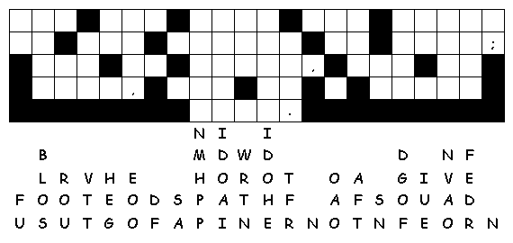

This Week:
Lamentations
1:1-6 and [Lamentations
3:19-26 or Psalm
137] or Habakkuk
1:1-4; 2:1-4 and Psalm
37:1-9,
2
Timothy 1:1-14, Luke
17:5-10
Middle-School Pew-work
Make
a list of all the gifts God has given
you:
________________________________________________________________________
________________________________________________________________________
________________________________________________________________________
________________________________________________________________________
Which
one of these gifts will you "stir up" this week, and how?
________________________________________________________________________
________________________________________________________________________
________________________________________________________________________
________________________________________________________________________
________________________________________________________________________
________________________________________________________________________
________________________________________________________________________

Next
week: Jeremiah
29:1, 4-7 and Psalm
66:1-12 or 2
Kings 5:1-3, 7-15c and Psalm
111, 2
Timothy 2:8-15, Luke
17:11-19